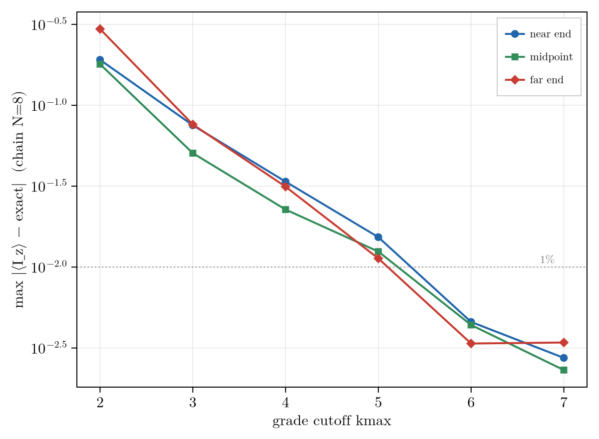
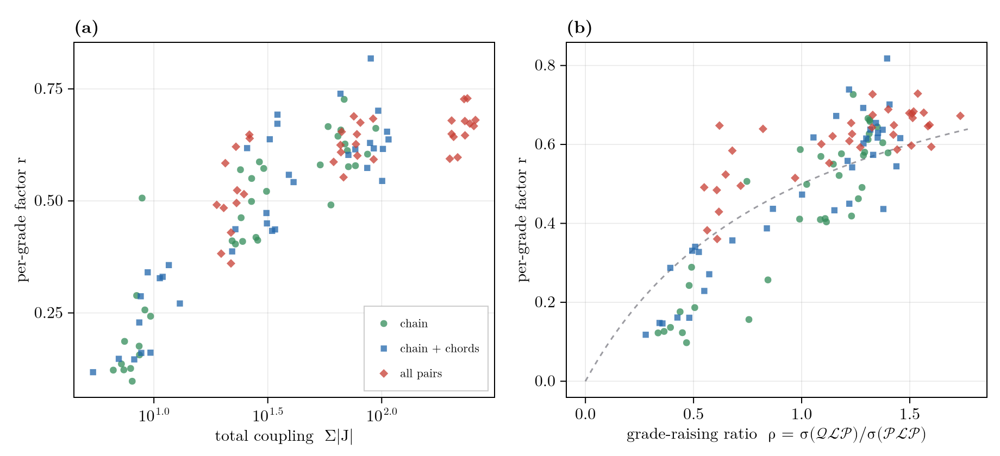

The Convergence Rate
When the cutoff sits below the floor (The Exactness Condition), grade truncation is a convergence-controlled approximation. Its error is a correlation light-cone whose per-grade decay is a gauge-invariant structural property of the generator, computable before any propagation.
The Correlation Light-Cone
Truncation discards the correlation order that has spread past the cutoff, and that spreading is ballistic. From a localized start the grade-$k$ amplitude follows a light-cone envelope,
\[a_k(t) \;\sim\; \frac{(v t)^k}{k!},\]
with a front at $k \approx v t$ set by a spreading velocity $v$. Two regimes follow. Truncating below a low closing grade severs the algebra and the failure is qualitative, the generator returning identically zero where the signal is large (the AA'X system at a cutoff of two is the validated gate). When the algebra fills every grade instead, the cutoff lands in the tail of the envelope and the error converges: the $N=8$ chain below loses 3-4x per added grade, reaching 1% by grade five.

The per-grade factor is therefore not constant but $r = a_{k+1}/a_k = v t/(k+1)$. Near the front ($k \approx v t$) it is the rate a practical cutoff sees; past the front ($k > v t$) the factorial takes over, so deep truncation beats the geometric $r^{k_{\max}}$. Just below the crossover the error need not fall at every step (mean-field $k_{\max}=1$ can beat $k_{\max}=2$); past it the tail is reliable.
The Rate as a Generator Property
The front factor is fixed by the generator alone. Grade truncation makes $\mathcal{L}$ grade-tridiagonal (single-spin terms preserve grade, two-spin couplings move it by ±1), so the only link across the cutoff is the top grade-raising rung, the block $\mathcal{Q}\mathcal{L}\mathcal{P}$. A correlation reaching the cutoff either climbs that rung or is resolved within the retained space, and the fraction it loses per grade is the branching ratio between the two rates,
\[r \;\approx\; \frac{\rho}{1+\rho}, \qquad \rho \;=\; \frac{\sigma_{\max}(\mathcal{Q}\mathcal{L}\mathcal{P})}{\sigma_{\max}\!\big((1-\Pi)\,\mathcal{P}\mathcal{L}\mathcal{P}\big)},\]
the grade-raising ratio. Three choices make this law parameter-free ($R^2 \approx 0.6$ across the ensemble below, with unit coefficient):
- Spectral norm. The rate is the dominant singular value $\sigma_{\max}$ (operator-2 norm), not the Frobenius or $\infty$ norm. It is the norm induced by the Hilbert-Schmidt metric in which truncation error is measured, so it is the actual amplitude-transfer rate. The spreading rides the leading singular vector of $\mathcal{Q}\mathcal{L}\mathcal{P}$, a coherent, unequally weighted combination of the grade-raising channels.
- Gauge fixing. $\Pi$ projects out the conserved-generator commutators $[C,\cdot]$ (the common-mode $I_z^{\mathrm{tot}}$ for homonuclear spins). A uniform offset is a global rotation that cannot change convergence, so it must not enter $\rho$; in practice this is a mean-subtraction of the offsets.
- Field-independence. $\rho$ is one axis. At high field it is the strong-coupling parameter $\sum|J_{ij}|/\Delta\delta$ (coupling over shift dispersion); at zero field $\sigma((1-\Pi)\mathcal{P}\mathcal{L}\mathcal{P})$ is carried by the coupling itself and $\rho$ is a field-free connectivity number. There is no separate ZULF theory of truncation, only $\rho$ growing large.
Across a grid of random six-spin systems spanning coupling strength and graph density, the measured $r$ collapses onto this law (below). Graph density on its own does not predict $r$ (rank correlation $0.53$): connectivity matters only through the coupling it carries, so a dense but weakly coupled cluster, a tight proton network or an NOE-style dipolar web, behaves like a strongly coupled sparse one.

The block $\mathcal{Q}\mathcal{L}\mathcal{P}$ closes the loop with exactness: $\mathcal{Q}\mathcal{L}\mathcal{P}=0$ is the floor ($\rho=0$, exact), and $\rho$ is largest at the isotropic and ZULF limit, where $r$ nears its ceiling and no low cutoff helps. One block governs both whether truncation is exact and, when it is not, how fast it converges.
Connections and Open Directions
The mean correlation order $\langle k\rangle(t) = v t$ is the operator-growth (Krylov) complexity, so grade-truncation convergence is the operator-growth question posed in correlation-order space. The grade cutoff plays the role bond dimension plays for matrix-product states: there the truncation is controlled by the entanglement entropy ($\chi \sim e^{S}$), here by the entropy $H = -\sum_k p_k \ln p_k$ of the grade distribution. Grade truncation is, in that sense, a renormalization in correlation order, with $\rho$ the relevant-to-marginal ratio of the flow.
Several problems follow from this and are open; they are the research program the method is built toward.
- The information dimension as an a-priori cutoff. The effective number of occupied grades is $D = e^{H}$, the correlation-order analogue of a bond dimension. Whether $D$ can be estimated from the generator alone, setting $k_{\max}$ without a convergence sweep, is open.
- Dissipation as a cutoff. Relaxation damps high-grade coherences ($\sim k\gamma$), so open systems truncate better than closed ones, with a finite information dimension $k_\ast \sim v/\gamma$. The exact dissipative closure is open, and the demanding cases are exactly the long-lived states (nuclear singlets, hyperpolarization, zero field) where $k_\ast$ is large.
- The exact rate. The branching law is the leading, one-rung term of a grade-ladder continued fraction; carrying the expansion gives the exact rate and state-resolved error bounds.
- A thermodynamic formulation. The dissipative steady state is a Gibbs distribution over an effective grade-energy, with the entropy a monotone (c-function) descending a free energy, placing grade truncation on a non-equilibrium thermodynamic footing.